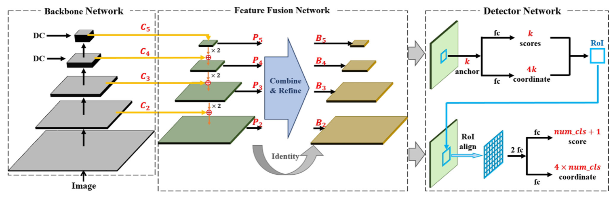
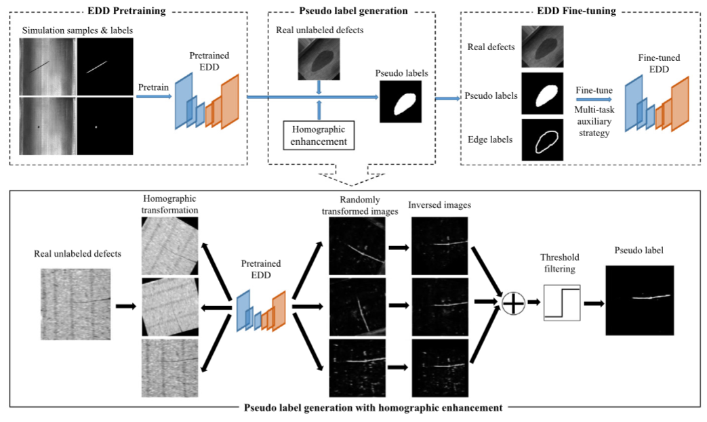
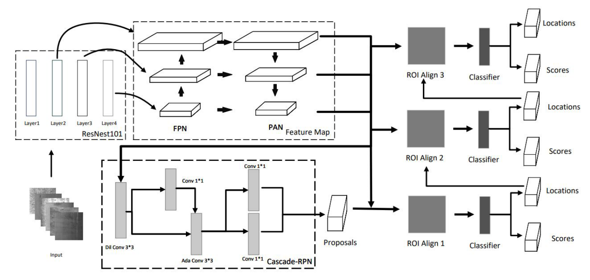

Ruiyang Hao
|
Ruiyang HaoResearch Assistant Institute for AI Industry Research (AIR), Tsinghua University Haidian, Beijing, 100084, China Email: hry20@tsinghua.org.cn; haory369@gmail.com [Google Scholar] [ResearchGate] |
I'm looking for a PhD position (Expected to enroll in 2025). My full Curriculum Vitae (CV) is here (updated in Dec 2023).
Biography
I am a Research Assistant at the Big Data Intelligence Lab, Institute for AI Industry Research (AIR), Tsinghua University, under the supervision of Prof. Zaiqing Nie. I received the MPhil degree from Department of Automation, Tsinghua University, under the supervision of Prof. Biqing Huang, in 2023, and received the BEng degree (Hons.) from Shenyuan Honors College, Beihang University, under the supervision of Prof. Ying Cheng, in 2020. I worked as a Research Intern (2022.06-2022.10) in SenseTime, under the supervision of Dr. Jiang Wu.
The automatic system is an exciting and popular topic. Specifically, my research interests involve the perception algorithms and decision-making in automatic systems. It is exhilarating to be able to contribute to this field.
Experiences
|
2023.07 - now, Institute for AI Industry Research (AIR), Tsinghua University Research Assistant |
|
|
2022.06 - 2022.10, Emerging Innovation Group, SenseTime Research Research Intern |
|
|
2020.09 - 2023.07, Department of Automation, Tsinghua University Master Student, GPA: 4.00/4.00 |
|
 |
2016.09 - 2020.06, Shenyuan Honors Collage, Beihang University Undergraduate Student, GPA: 3.83/4.00 |
Selected Publications
 |
A steel surface defect inspection approach towards smart industrial monitoring. |
 |
Efficient surface defect detection using self-supervised learning strategy and segmentation network |
 |
Manufacturing service supply-demand optimization with dual diversities for industrial internet platforms |
 |
Metal Surface Defect Detection Method Based on Improved Cascade R-CNN |
Projects
See more details of my projects.Prefessional Services
- Reviewer of Advanced Engineering Informatics, Journal of Industrial Information Integration, Journal of Intelligent Manufacturing, Journal of Real-Time Image Processing, etc.
- Student Assistant to the Master's Degree Defense Committee of Tsinghua University, 2023.
Selected Awards
- National Scholarship, awarded by the Ministry of Education of the PRC, in 2018, top 1% of undergraduates.
- First-class Excellence Scholarship, awarded by Tsinghua University, in 2022, top 2.5% of graduate students.
- First-class Excellence Scholarship, awarded by Tsinghua University, in 2021, top 2.5% of graduate students.
- Outstanding graduate and the honored degree, awarded by Beihang University, in 2020, top 5% of undergraduates.
- Meritorious Prize of Interdisciplinary Contest in Modeling, awarded by the American Consortium for Mathematics and Its Applications, in 2019, top 8% of contestants.
- Meritorious Prize of Interdisciplinary Contest in Modeling, awarded by the American Consortium for Mathematics and Its Applications, in 2018, top 8% of contestants.